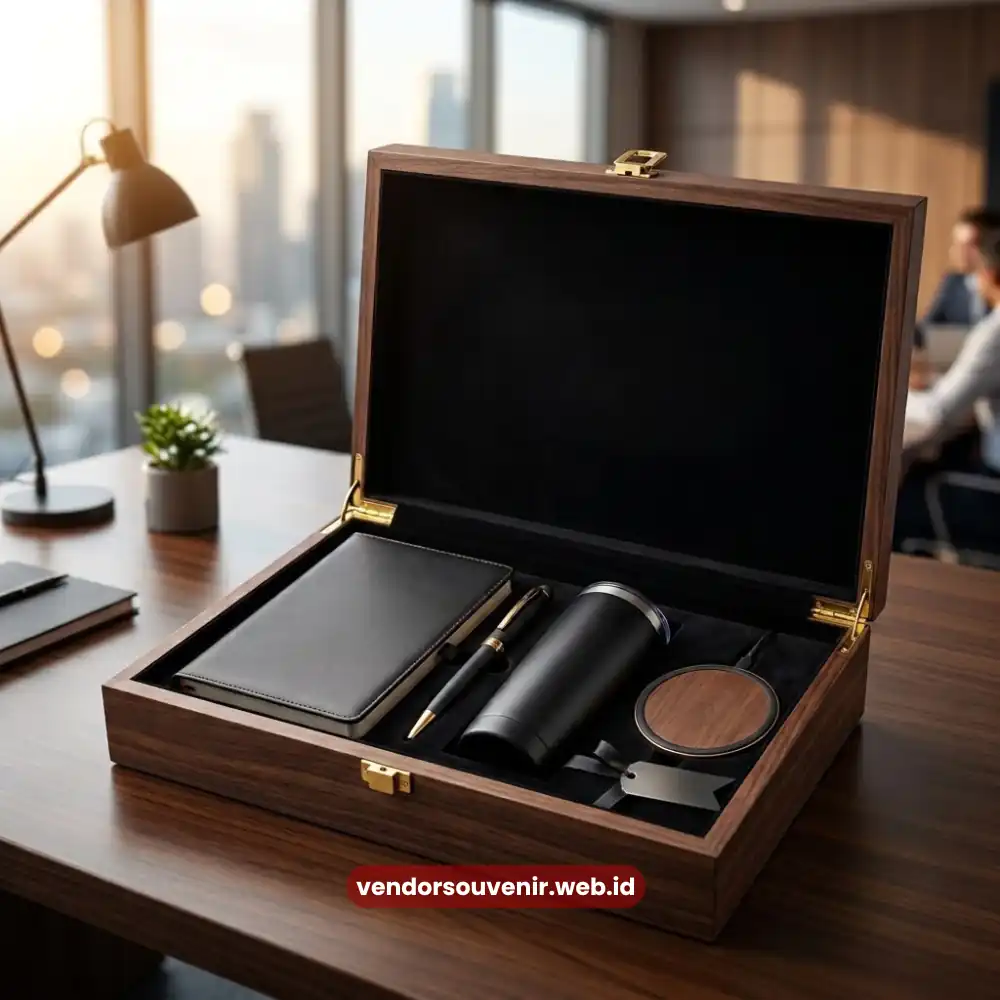

Daftar Isi
Custom packaging set hadiah perusahaan adalah proses penyesuaian kemasan hadiah korporat agar mencerminkan identitas brand, mencakup pemilihan material, warna, bentuk kotak, hingga penempatan logo.
Kemasan yang dirancang khusus penting karena menjadi kesan pertama yang dirasakan penerima sebelum melihat isi hadiah di dalamnya. Investasi pada custom packaging berkontribusi langsung terhadap persepsi kualitas brand di mata klien maupun karyawan.
- Custom packaging mencakup material, warna, bentuk, dan penempatan logo.
- Kemasan menjadi kesan pertama sebelum isi hadiah terlihat.
- Material seperti kayu dan kertas premium memperkuat kesan eksklusif.
- Proses produksi custom packaging membutuhkan waktu perencanaan yang matang.
- Vendor Souvenir menyediakan layanan custom packaging lengkap untuk kebutuhan korporat.
Apa Itu Custom Packaging untuk Set Hadiah Perusahaan?
Custom packaging merujuk pada proses merancang kemasan hadiah sesuai identitas visual perusahaan, mulai dari pemilihan warna yang sesuai brand guideline hingga penempatan logo pada posisi yang strategis. Berbeda dengan kemasan generik, custom packaging dirancang khusus agar selaras dengan karakter brand perusahaan pemberi.
Proses ini biasanya melibatkan tahap konsultasi desain, pemilihan material, pembuatan prototipe, hingga produksi massal setelah desain final disetujui oleh pihak perusahaan.
Mengapa Kemasan Custom Penting untuk Memperkuat Branding Perusahaan?
Kemasan menjadi titik kontak visual pertama yang dilihat penerima hadiah, bahkan sebelum mereka mengetahui isi di dalamnya. Kemasan yang dirancang secara konsisten dengan identitas brand membantu memperkuat pengenalan visual perusahaan, sekaligus menciptakan kesan bahwa perusahaan tersebut memperhatikan detail dalam setiap aspek operasionalnya.
Konsistensi visual antara kemasan dan elemen branding lainnya, seperti kartu nama atau website perusahaan, juga berperan dalam memperkuat citra merek yang lebih solid dan mudah diingat dalam jangka panjang.

Contoh Set Hadiah Korporat dengan Custom Packaging
Apa Saja Material yang Umum Digunakan dalam Custom Packaging Korporat?
Material yang umum digunakan meliputi kotak kayu untuk kesan eksklusif dan tahan lama, kertas art carton dengan laminasi doff untuk kesan modern dan elegan, serta kain kanvas untuk kemasan berbentuk tas dengan kesan lebih kasual namun tetap profesional.
Pemilihan material sebaiknya mempertimbangkan karakter acara dan tingkat formalitas penerima hadiah, karena setiap material memberikan kesan visual dan taktil yang berbeda saat diterima.
Bagaimana Proses Pembuatan Custom Packaging Korporat Berlangsung?
Proses pembuatan umumnya dimulai dari tahap konsultasi kebutuhan dan brand guideline perusahaan, dilanjutkan dengan pembuatan desain awal, revisi desain sesuai masukan, pembuatan sampel atau prototipe, hingga produksi massal setelah sampel disetujui.
Setiap tahap membutuhkan waktu yang berbeda tergantung tingkat kompleksitas desain dan jumlah pesanan, sehingga perencanaan waktu produksi menjadi faktor penting agar kemasan siap tepat waktu sesuai kebutuhan acara.
Apa Saja Elemen Visual yang Perlu Diperhatikan dalam Custom Packaging?
Elemen visual yang perlu diperhatikan meliputi konsistensi warna dengan identitas brand, ukuran logo yang proporsional terhadap kemasan, tipografi yang selaras dengan gaya visual perusahaan, serta finishing seperti emboss, foil, atau spot UV untuk memperkuat kesan premium.

Custom Packaging Hadiah Korporat Vendor Souvenir
Apakah Custom Packaging Membutuhkan Biaya Tambahan yang Signifikan?
Biaya tambahan bergantung pada tingkat kompleksitas desain, jenis material, dan teknik finishing yang dipilih. Kemasan dengan desain sederhana namun rapi umumnya tetap dapat memberikan kesan profesional tanpa harus menggunakan teknik finishing yang terlalu kompleks, sehingga biaya dapat disesuaikan dengan anggaran perusahaan.
Custom packaging bukan sekadar pembungkus, melainkan investasi strategis yang memperkuat kesan pertama dan citra brand perusahaan di mata klien maupun karyawan. Pemilihan material, konsistensi visual, dan perencanaan waktu produksi yang matang menjadi kunci keberhasilan custom packaging set hadiah perusahaan.
Vendor Souvenir menyediakan layanan konsultasi desain dan produksi custom packaging lengkap untuk kebutuhan set hadiah perusahaan Anda. Kunjungi vendorsouvenir.web.id sekarang untuk memulai konsultasi desain kemasan korporat Anda.
Maroon Souvenir
Partner Corporate Gift terpercaya di Indonesia. Berpengalaman melayani ratusan perusahaan sejak 2018.
Lihat Portofolio Kami